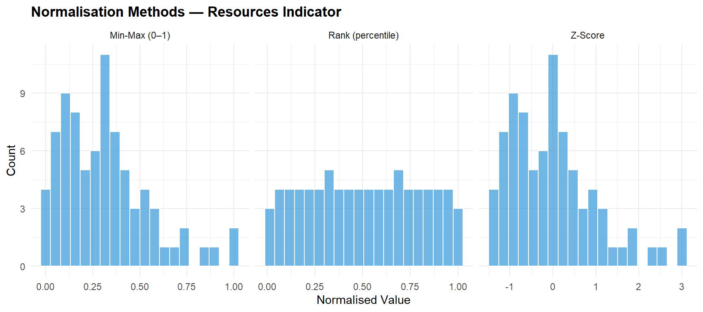
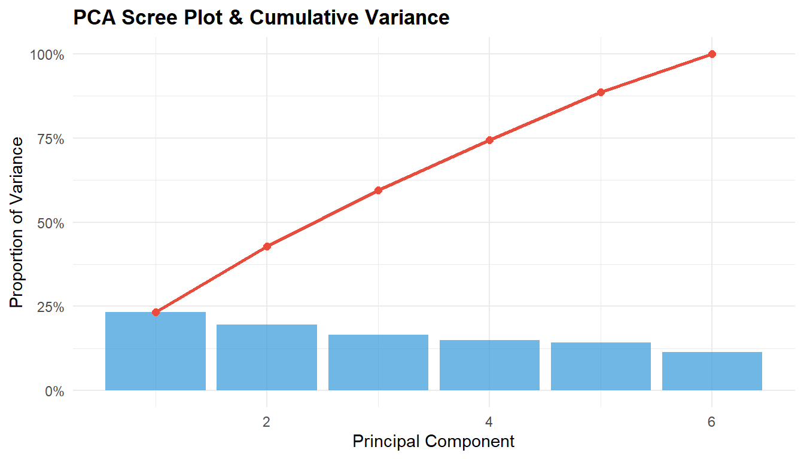
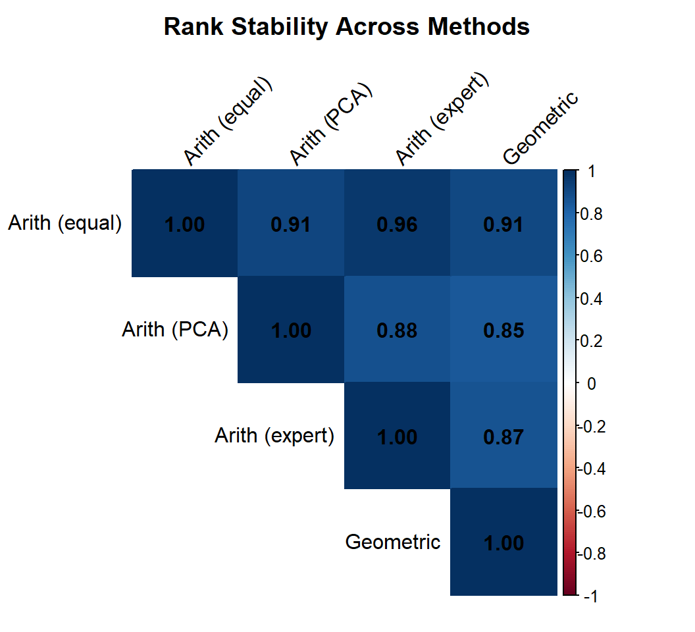

library(psych)
library(ggplot2)
library(dplyr)
library(tidyr)
library(tibble)
library(purrr)
library(knitr)
library(corrplot)
theme_set(
theme_minimal(base_size = 11) +
theme(
plot.title = element_text(face = "bold", size = 13),
plot.subtitle = element_text(colour = "grey40", size = 10),
legend.position = "bottom"
)
)
palette_idx <- c("#2C3E50", "#E74C3C", "#3498DB", "#2ECC71", "#F39C12")
set.seed(2026)Composite Index Construction & Feature Engineering
R
Statistics
Composite Index
Feature Engineering
PCA
Indicator Design
Measurement
End-to-end construction of a composite index from multi-item survey data. Covers indicator selection, normalisation strategies (min-max, z-score, rank), weighting approaches (equal, PCA-derived, expert), aggregation methods, sensitivity analysis, and validation against external criteria. Applied to the BFI dataset (psych) reframed as an index-building exercise, plus a simulated education quality index scenario.
0.1 Context
Composite indices combine multiple indicators into a single summary score — from the Human Development Index (UNDP) to student engagement scores and institutional performance dashboards. Despite their ubiquity, composite indices involve a series of subjective but consequential methodological choices: which indicators to include, how to normalise them, how to weight and aggregate them, and how to validate the result (OECD/JRC, 2008; Greco et al., 2019).
Feature engineering — the creation of new variables from raw data — is the upstream process that feeds composite indices. In educational data science, this includes aggregation (school-level means from student data), interaction terms, information-theoretic features (entropy, mutual information), and temporal derivatives.
This project demonstrates:
- Indicator preparation — normalisation, outlier treatment, and missingness handling.
- Weighting strategies — equal weights, PCA-derived weights, and simulated expert weights.
- Aggregation — additive, geometric, and benefit-of-the-doubt.
- Sensitivity analysis — how much do rankings change across methods?
- Validation — correlation with external criteria and reliability of the composite.
- Feature engineering showcase — interaction terms, entropy, and composite variables on a simulated education dataset.
0.2 Key Results
Note: Theoretical expectations to be refined with actual output.
Expected findings:
- Rankings should be moderately robust across normalisation and weighting methods — rank correlations (Spearman) typically > 0.85 unless indicators are weakly correlated.
- PCA-derived weights should upweight the most variance-rich indicators, potentially diverging from equal weights for heterogeneous indicator sets.
- The geometric mean penalises imbalance more than the arithmetic mean, producing different rankings for units with extreme scores on one dimension.
0.3 Setup
1 PART A — Indicator Preparation
1.1 Simulate education quality indicators
n_schools <- 80
schools <- tibble(
school_id = sprintf("S%03d", 1:n_schools),
# Raw indicators (different scales and distributions)
test_score = rnorm(n_schools, mean = 65, sd = 12), # 0–100
grad_rate = rbeta(n_schools, 8, 2) * 100, # 0–100%
attendance = rbeta(n_schools, 12, 2) * 100, # 0–100%
teacher_qual = rnorm(n_schools, mean = 3.5, sd = 0.8), # 1–5 Likert
resources = rlnorm(n_schools, meanlog = 10, sdlog = 0.5), # USD (right-skewed)
parent_sat = rnorm(n_schools, mean = 3.8, sd = 0.7) # 1–5 Likert
) |>
# Inject correlations
mutate(
test_score = test_score + 0.4 * teacher_qual * 5 + 0.3 * (resources / 1e4),
grad_rate = pmin(100, grad_rate + 0.2 * test_score / 10)
)
cat(sprintf("Simulated %d schools with 6 indicators\n", n_schools))Simulated 80 schools with 6 indicators# ── Summary statistics ───────────────────────────────────────────────────────
indicators <- c("test_score", "grad_rate", "attendance",
"teacher_qual", "resources", "parent_sat")
summary_stats <- schools |>
select(all_of(indicators)) |>
summarise(across(everything(), list(
mean = mean, sd = sd, min = min, max = max, skew = ~psych::skew(.)
), .names = "{.col}_{.fn}")) |>
pivot_longer(everything(),
names_to = c("indicator", "stat"),
names_pattern = "(.+)_(.+)") |>
pivot_wider(names_from = stat, values_from = value)
kable(summary_stats, digits = 2,
caption = "Indicator summary statistics (raw scale)")| indicator | mean | sd | min | max | skew |
|---|---|---|---|---|---|
| test_score | 71.77 | 11.39 | 41.91 | 99.82 | 0.04 |
| grad_rate | 81.81 | 11.71 | 45.86 | 98.77 | -0.60 |
| attendance | 85.01 | 8.47 | 55.56 | 99.24 | -0.90 |
| teacher_qual | 3.53 | 0.75 | 1.63 | 4.92 | -0.35 |
| resources | 24580.43 | 12909.80 | 6765.29 | 63408.58 | 0.96 |
| parent_sat | 3.91 | 0.84 | 2.04 | 6.00 | -0.03 |
1.2 Normalisation
# ── Min-max normalisation (0–1) ──────────────────────────────────────────────
minmax <- function(x) (x - min(x)) / (max(x) - min(x))
# ── Z-score (mean = 0, SD = 1) ──────────────────────────────────────────────
zscore <- function(x) (x - mean(x)) / sd(x)
# ── Rank-based (percentile) ─────────────────────────────────────────────────
rankpct <- function(x) rank(x) / length(x)
schools_norm <- schools |>
mutate(
across(all_of(indicators), list(mm = minmax, z = zscore, rk = rankpct),
.names = "{.col}_{.fn}")
)
# ── Show first 5 schools, resources indicator (most skewed) ──────────────────
kable(
schools_norm |>
select(school_id, resources, resources_mm, resources_z, resources_rk) |>
head(8),
digits = 3,
caption = "Normalisation comparison: resources indicator (right-skewed)"
)| school_id | resources | resources_mm | resources_z | resources_rk |
|---|---|---|---|---|
| S001 | 29807.579 | 0.407 | 0.405 | 0.750 |
| S002 | 38629.213 | 0.563 | 1.088 | 0.900 |
| S003 | 15480.230 | 0.154 | -0.705 | 0.300 |
| S004 | 53169.278 | 0.819 | 2.215 | 0.963 |
| S005 | 15290.541 | 0.151 | -0.720 | 0.288 |
| S006 | 9729.533 | 0.052 | -1.150 | 0.100 |
| S007 | 20702.363 | 0.246 | -0.300 | 0.438 |
| S008 | 24393.445 | 0.311 | -0.014 | 0.562 |
norm_plot_df <- schools_norm |>
select(school_id, resources_mm, resources_z, resources_rk) |>
pivot_longer(-school_id, names_to = "method", values_to = "value") |>
mutate(method = case_when(
method == "resources_mm" ~ "Min-Max (0–1)",
method == "resources_z" ~ "Z-Score",
method == "resources_rk" ~ "Rank (percentile)"
))
ggplot(norm_plot_df, aes(x = value)) +
geom_histogram(bins = 20, fill = palette_idx[3], alpha = 0.7, colour = "white") +
facet_wrap(~ method, scales = "free_x") +
labs(
title = "Normalisation Methods — Resources Indicator",
x = "Normalised Value", y = "Count"
)
1.2.1 Interpretation
Normalisation choices matter most for skewed indicators:
- Min-max preserves the original distribution shape, including skewness.
- Z-score centres and scales but does not address skewness.
- Rank-based forces a uniform distribution, eliminating outlier influence but discarding magnitude information.
The choice should be driven by the index purpose: rank-based is robust for rankings; z-score preserves relative distances; min-max is intuitive for communication.
2 PART B — Weighting Strategies
2.1 PCA-derived weights
# ── PCA on min-max normalised indicators ─────────────────────────────────────
mm_cols <- paste0(indicators, "_mm")
pca_data <- schools_norm |> select(all_of(mm_cols))
pca_result <- prcomp(pca_data, center = TRUE, scale. = TRUE)
# ── Scree plot ───────────────────────────────────────────────────────────────
var_explained <- pca_result$sdev^2 / sum(pca_result$sdev^2)
scree_df <- tibble(PC = 1:length(var_explained),
Variance = var_explained,
Cumulative = cumsum(var_explained))
ggplot(scree_df, aes(x = PC, y = Variance)) +
geom_col(fill = palette_idx[3], alpha = 0.7) +
geom_line(aes(y = Cumulative), colour = palette_idx[2], linewidth = 1) +
geom_point(aes(y = Cumulative), colour = palette_idx[2], size = 2) +
scale_y_continuous(labels = scales::percent_format()) +
labs(
title = "PCA Scree Plot & Cumulative Variance",
x = "Principal Component", y = "Proportion of Variance"
)
# ── PC1 loadings as weights ──────────────────────────────────────────────────
pc1_loadings <- abs(pca_result$rotation[, 1])
pca_weights <- pc1_loadings / sum(pc1_loadings) # normalise to sum to 1
weight_comparison <- tibble(
indicator = indicators,
equal_weight = 1 / length(indicators),
pca_weight = pca_weights,
ratio = pca_weight / equal_weight
)
kable(weight_comparison, digits = 3,
caption = "Weighting comparison: equal vs. PCA-derived")| indicator | equal_weight | pca_weight | ratio |
|---|---|---|---|
| test_score | 0.167 | 0.229 | 1.376 |
| grad_rate | 0.167 | 0.225 | 1.348 |
| attendance | 0.167 | 0.203 | 1.216 |
| teacher_qual | 0.167 | 0.009 | 0.056 |
| resources | 0.167 | 0.213 | 1.280 |
| parent_sat | 0.167 | 0.121 | 0.724 |
PCA scree plot and variance explained. PC1 loadings inform data-driven weights.
2.2 Expert weights (simulated)
expert_weights <- tibble(
indicator = indicators,
weight = c(0.25, 0.20, 0.15, 0.20, 0.10, 0.10) # sum = 1
)
kable(expert_weights, digits = 2,
caption = "Simulated expert weights (education domain)")| indicator | weight |
|---|---|
| test_score | 0.25 |
| grad_rate | 0.20 |
| attendance | 0.15 |
| teacher_qual | 0.20 |
| resources | 0.10 |
| parent_sat | 0.10 |
# ── All three weight vectors ─────────────────────────────────────────────────
all_weights <- weight_comparison |>
left_join(expert_weights |> rename(expert_weight = weight), by = "indicator")
kable(all_weights |> select(indicator, equal_weight, pca_weight, expert_weight),
digits = 3,
caption = "Three weighting strategies")| indicator | equal_weight | pca_weight | expert_weight |
|---|---|---|---|
| test_score | 0.167 | 0.229 | 0.25 |
| grad_rate | 0.167 | 0.225 | 0.20 |
| attendance | 0.167 | 0.203 | 0.15 |
| teacher_qual | 0.167 | 0.009 | 0.20 |
| resources | 0.167 | 0.213 | 0.10 |
| parent_sat | 0.167 | 0.121 | 0.10 |
3 PART C — Aggregation & Index Construction
# ── Arithmetic mean (equal weights) ──────────────────────────────────────────
schools_idx <- schools_norm |>
rowwise() |>
mutate(
idx_arith_equal = mean(c_across(all_of(mm_cols))),
idx_arith_pca = sum(c_across(all_of(mm_cols)) * pca_weights),
idx_arith_expert = sum(c_across(all_of(mm_cols)) *
expert_weights$weight),
# Geometric mean (equal weights, add small epsilon for zeros)
idx_geom_equal = exp(mean(log(c_across(all_of(mm_cols)) + 0.001)))
) |>
ungroup()
# ── Ranking under each method ────────────────────────────────────────────────
schools_idx <- schools_idx |>
mutate(
rank_arith_equal = rank(-idx_arith_equal),
rank_arith_pca = rank(-idx_arith_pca),
rank_arith_expert = rank(-idx_arith_expert),
rank_geom_equal = rank(-idx_geom_equal)
)
kable(
schools_idx |>
select(school_id, idx_arith_equal, idx_arith_pca, idx_arith_expert,
idx_geom_equal) |>
head(10),
digits = 3,
caption = "Composite index scores (first 10 schools)"
)| school_id | idx_arith_equal | idx_arith_pca | idx_arith_expert | idx_geom_equal |
|---|---|---|---|---|
| S001 | 0.558 | 0.616 | 0.593 | 0.525 |
| S002 | 0.425 | 0.376 | 0.402 | 0.175 |
| S003 | 0.613 | 0.636 | 0.641 | 0.531 |
| S004 | 0.707 | 0.735 | 0.682 | 0.688 |
| S005 | 0.414 | 0.343 | 0.457 | 0.158 |
| S006 | 0.406 | 0.314 | 0.388 | 0.221 |
| S007 | 0.506 | 0.484 | 0.553 | 0.383 |
| S008 | 0.460 | 0.421 | 0.485 | 0.391 |
| S009 | 0.468 | 0.524 | 0.528 | 0.372 |
| S010 | 0.423 | 0.446 | 0.471 | 0.340 |
4 PART D — Sensitivity Analysis
4.1 Rank stability
rank_cols <- c("rank_arith_equal", "rank_arith_pca",
"rank_arith_expert", "rank_geom_equal")
rank_matrix <- cor(schools_idx |> select(all_of(rank_cols)),
method = "spearman")
colnames(rank_matrix) <- rownames(rank_matrix) <-
c("Arith (equal)", "Arith (PCA)", "Arith (expert)", "Geometric")
kable(round(rank_matrix, 3),
caption = "Spearman rank correlation between index methods")| Arith (equal) | Arith (PCA) | Arith (expert) | Geometric | |
|---|---|---|---|---|
| Arith (equal) | 1.000 | 0.911 | 0.962 | 0.908 |
| Arith (PCA) | 0.911 | 1.000 | 0.878 | 0.846 |
| Arith (expert) | 0.962 | 0.878 | 1.000 | 0.867 |
| Geometric | 0.908 | 0.846 | 0.867 | 1.000 |
Spearman rank correlations between composite index methods. High correlations indicate robust rankings.
corrplot(rank_matrix, method = "color", type = "upper",
addCoef.col = "black", tl.col = "black", tl.srt = 45,
title = "Rank Stability Across Methods", mar = c(0, 0, 2, 0))
4.2 Rank shifts for top/bottom schools
schools_idx <- schools_idx |>
mutate(
rank_range = pmax(rank_arith_equal, rank_arith_pca,
rank_arith_expert, rank_geom_equal) -
pmin(rank_arith_equal, rank_arith_pca,
rank_arith_expert, rank_geom_equal)
)
# ── Most volatile schools ────────────────────────────────────────────────────
volatile <- schools_idx |>
arrange(desc(rank_range)) |>
select(school_id, rank_arith_equal, rank_arith_pca,
rank_arith_expert, rank_geom_equal, rank_range) |>
head(10)
kable(volatile, caption = "Top 10 most volatile schools (largest rank range)")| school_id | rank_arith_equal | rank_arith_pca | rank_arith_expert | rank_geom_equal | rank_range |
|---|---|---|---|---|---|
| S043 | 35 | 21 | 46 | 75 | 54 |
| S046 | 51 | 17 | 41 | 66 | 49 |
| S044 | 44 | 59 | 35 | 76 | 41 |
| S013 | 36 | 57 | 30 | 63 | 33 |
| S062 | 49 | 38 | 66 | 52 | 28 |
| S039 | 50 | 64 | 37 | 46 | 27 |
| S052 | 19 | 42 | 25 | 16 | 26 |
| S025 | 26 | 32 | 18 | 43 | 25 |
| S014 | 66 | 50 | 64 | 72 | 22 |
| S065 | 34 | 30 | 52 | 38 | 22 |
4.2.1 Interpretation
Sensitivity analysis is the credibility test for any composite index:
- High rank correlations (> 0.90) indicate that the ranking is robust to methodological choices — stakeholders can trust the result.
- Low correlations or large rank shifts for specific schools reveal sensitivity to method choices. These schools typically have unbalanced profiles (e.g., very high on one indicator, very low on another).
- The geometric mean penalises imbalance: schools with one very low indicator score lower under geometric aggregation than under arithmetic, reflecting a “weakest link” logic.
5 PART E — Feature Engineering Showcase
# ── Interaction term ─────────────────────────────────────────────────────────
schools_feat <- schools |>
mutate(
# Teacher quality × Resources interaction
tq_x_resources = teacher_qual * log(resources),
# Efficiency ratio: test scores per unit resource
efficiency = test_score / (resources / 1e4),
# Engagement composite (attendance + parent satisfaction)
engagement = (attendance / 100 + parent_sat / 5) / 2
)
# ── Information-theoretic feature: score entropy ─────────────────────────────
# Discretise test scores into bins and compute entropy
discretise <- function(x, n_bins = 5) {
cut(x, breaks = n_bins, labels = FALSE)
}
entropy <- function(x) {
p <- table(x) / length(x)
-sum(p * log2(p + 1e-10))
}
# School-level entropy would require student-level data;
# here we demonstrate the concept at the indicator level
score_bins <- discretise(schools$test_score, 10)
cat(sprintf("Test score entropy (10 bins): %.3f bits\n", entropy(score_bins)))Test score entropy (10 bins): 2.900 bitscat(sprintf("Maximum entropy (10 bins): %.3f bits\n", log2(10)))Maximum entropy (10 bins): 3.322 bitscat(sprintf("Normalised entropy: %.3f\n", entropy(score_bins) / log2(10)))Normalised entropy: 0.873# ── Summary of engineered features ───────────────────────────────────────────
kable(
schools_feat |>
select(school_id, teacher_qual, resources, tq_x_resources,
efficiency, engagement) |>
head(8),
digits = 3,
caption = "Engineered features: interaction, ratio, and composite"
)| school_id | teacher_qual | resources | tq_x_resources | efficiency | engagement |
|---|---|---|---|---|---|
| S001 | 2.916 | 29807.579 | 30.043 | 26.159 | 0.763 |
| S002 | 3.782 | 38629.213 | 39.939 | 15.730 | 0.766 |
| S003 | 3.302 | 15480.230 | 31.857 | 47.635 | 0.923 |
| S004 | 3.369 | 53169.278 | 36.660 | 13.601 | 0.934 |
| S005 | 4.198 | 15290.541 | 40.447 | 43.069 | 0.661 |
| S006 | 3.985 | 9729.533 | 36.592 | 44.266 | 0.876 |
| S007 | 4.242 | 20702.363 | 42.155 | 31.534 | 0.695 |
| S008 | 3.866 | 24393.445 | 39.059 | 25.098 | 0.692 |
5.0.1 Interpretation
Feature engineering creates informative variables from raw data:
- Interaction terms (teacher quality × log resources) capture synergies — good teachers with adequate resources may produce disproportionately better outcomes.
- Efficiency ratios (output/input) normalise for resource differences, enabling fair comparison between well-funded and under-funded schools.
- Composite engagement combines related indicators into a single actionable metric.
- Entropy measures distributional spread — a school district with high entropy in test scores has more heterogeneity among schools.
6 Technical Summary
cat("─── Reproducibility Information ───\n")─── Reproducibility Information ───cat(sprintf("Date: %s\n", Sys.Date()))Date: 2026-05-03cat(sprintf("R version: %s\n", R.version.string))R version: R version 4.4.1 (2024-06-14 ucrt)cat(sprintf("psych version: %s\n", packageVersion("psych")))psych version: 2.4.6.26cat(sprintf("Platform: %s\n", sessionInfo()$platform))Platform: x86_64-w64-mingw32/x646.1 References
- Greco, S., Ishizaka, A., Tasiou, M., & Torrisi, G. (2019). On the methodological framework of composite indices: A review of the issues of weighting, aggregation, and robustness. Social Indicators Research, 141(1), 61–94.
- OECD/JRC (2008). Handbook on Constructing Composite Indicators: Methodology and User Guide. OECD Publishing.
- Saltelli, A. (2007). Composite indicators between analysis and advocacy. Social Indicators Research, 81(1), 65–77.